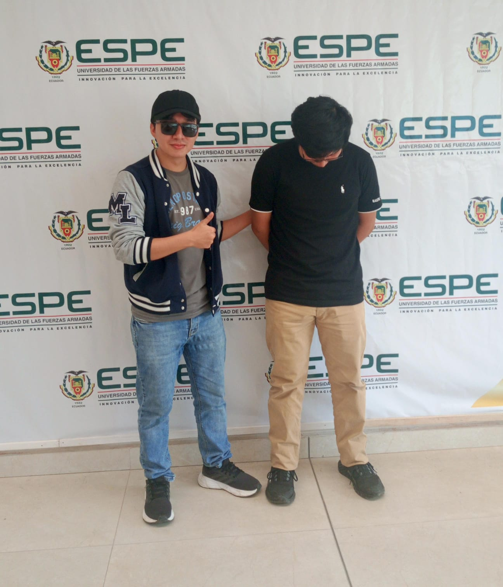

En esta página comparto imágenes, música y videos relacionados con mis gustos, pasatiempos e intereses.
Esta imagen representa uno de mis intereses personales: mi videojuego favorito que es Genshin Impact de la compañía Hoyoverse
Una imagen con unos compañeros de la universidad

Me gusta escuchar música durante mi tiempo libre. Una de mis canciones favoritas es "Cicada", de Good Kid.
Esta canción es de una franquicia de videojuegos "Zenless Zone Zero" el cual me gusta.
Esta es la cancion California del grupo "Los Vaguens"
En esta seccion incluyo unos videos en los cual compartia con mi hermana.
También incluyo un video externo relacionado con la música que me gusta escuchar